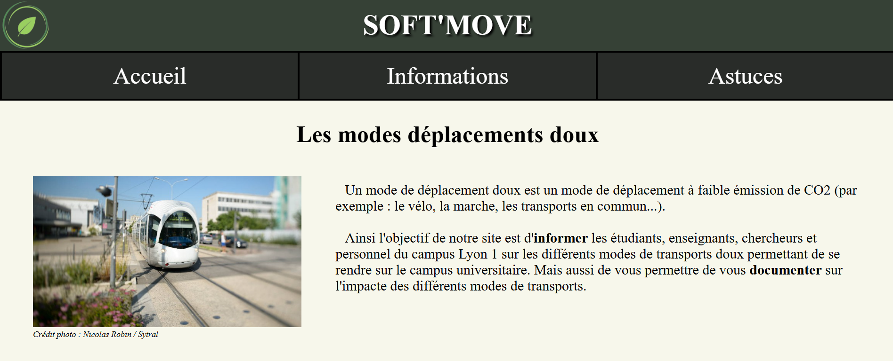

Soft'Move
Ce site web répértorie différentes informations sur les moyens de transports doux pour se rendre sur le campus de La Doua. On peut y trouver des informations sur les pistes cyclables, les stations de vélo'v, les stations de tramway, les stations de bus...
Technologies utilisées
- HTML
- CSS
Compétences développées
- Conduire un projet
- Collaborer au sein d'une équipe informatique